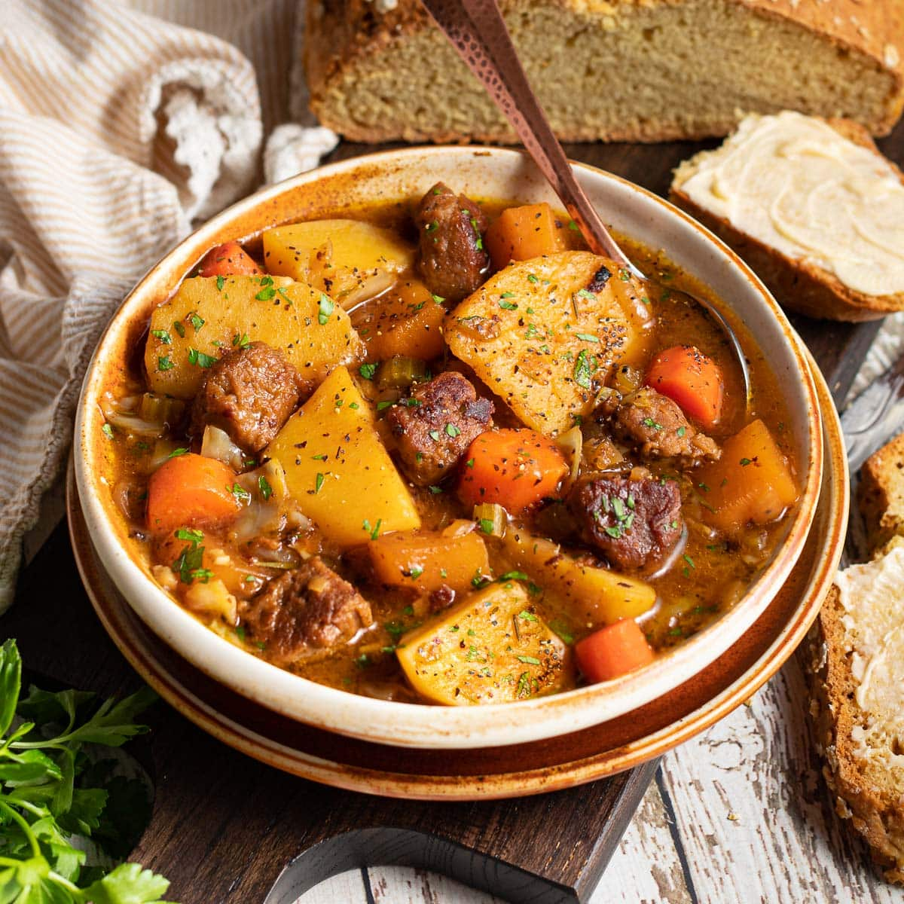

Irish Stew
Home Kitchen

Traditional Irish Stew
Irish stew it's a delicious and traditional dish, harkens back to the simple cooking of hard-working peasants on the land and features lamb or mutton, a few vegetables, broth, salt and pepper, and sometimes parsley and/or a bay leaf. . Nothing else. Simple, minimalistic and delicious, Irish stew is Ireland's beloved national dish.
Ingredients
- Salt
- Pepper
- Parsley
- Bay Leaf
- Lamb
Steps
- Heat some oil in a large pan and generously brown the lamb on all sides. Be careful not to over-crowd the pan and work in batches as needed. Transfer the lamb to a plate.
- In the same skillet, melt the butter and add the flour. Whisk together to combine and continue whisking for a few minutes or until the roux turns a rich brown color.
- Add the broth, whisking continually. Simmer until slightly thickened. Set aside.
- In a heavy stock pot or Dutch oven melt another tablespoon or two of butter over medium-high heat and add the vegetables. Cook until starting to soften, about 5 minutes.
- Add the browned lamb, potatoes, parsley, bay leaf, salt and pepper.
- Pour in the beef broth.
- Stir to combine.
- Place the pot on the middle rack of the oven pre-heated to 250 degrees F. Cook for 2 1/2 to 3 hours or until the meat is very tender. Add more salt and pepper to taste.
- Serve garnished with some chopped parsley. Some crusty bread and/or a leafy green salad make the perfect accompaniment. This stew is great for leftovers.